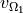
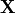
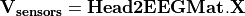
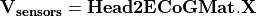
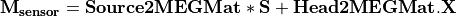

OpenMEEG from the command line¶
Diagram for the low level pipeline for computing leadfields (a.k.a., gain matrices) using OpenMEEG:

This section reviews the main OpenMEEG command line tools. The general syntax and main options are detailed for each command.
Full details are available in OpenMEEG documentation. In this section, command names are in red, options are in green and output files are shown in blue.
om_assemble¶
General syntax:
om_assemble Option Parameters Matrix
This program assembles the different matrices to be used in later stages. It uses the head description (the geometrical model and the conductivities of the head see `sec.geom`_, and `sec.cond`_), the sources (see `sec.sources`_) and the sensors (see `sec.sensors`_) information. Option selects the type of matrix to assemble. Parameters depends on the specific option Option.
Note
Abbreviated option names can be used, such as -HM or -hm instead of -HeadMat.
We now detail the possible options (with their abbreviated versions given in parentheses), allowing to define various matrices to assemble.
A typical command is:
om_assemble -HeadMat subject.geom subject.cond HeadMat.mat
In the above example, the Parameters are the two file names: subject.geom subject.cond. More generally, the Parameters include two such file names describing geometry and conductivity, plus additional Input, describe below for each Option.
General options for om_assemble¶
–help (-h): summarizes all possible options.
Head modelling options for om_assemble: produce matrices (called head matrices) linked to the propagation of electrical signals in the head.
-HeadMat (-HM, -hm): om_assemble computes the matrix called Head Matrix (a.k.a structure matrix) for the Symmetric BEM, linked to the electrical conduction within the head. The output matrix is symmetric.
Note
The symmetric format only stores the lower half of a matrix.
Source modelling options for om_assemble: compute the source matrix for Symmetric BEM (right-hand side of the linear system). This matrix maps the representation of the sources to their associated electric potential in an infinite medium (). Different options exist for the 2 types of source models:
-DipSourceMat (-DSM, -dsm): should be used when considering several isolated dipoles. This model is the most commonly used and should be used by default even if the dipoles correspond to the vertices of a cortical mesh. Input is a file containing the dipole descriptions. For faster computations, one can consider giving the name of the domain (containing all dipoles) as a string as an optional parameter in the end of the command line (see Example).
-SurfSourceMat (-SSM, -ssm): should be used for continuous surfacic distributions of dipoles. Input is a file containing a mesh that describes the surface. For faster computations, one can consider giving the name of the domain (containing all dipoles) as a string as an optional parameter in the end of the command line.
-EITSourceMat (-EITSM, -EITsm,): om_assemble computes the right-hand side vector for a given set of scalp electrodes where current injection is applied (which can be used for Electrical Impedance Tomography, EIT). For this option, Input is a file describing the electrode positions.
Sensor modelling options for om_assemble: compute matrices which are needed to integrate source and sensor information with computed potentials to provide the actual solution of the forward problem. The the following situations are handled: EEG, ECoG, sEEG, MEG.
- EEG:
-Head2EEGMat (-H2EM, -h2em): om_assemble computes the linear interpolation matrix that maps OpenMEEG unknown  to the potential on the scalp at EEG sensors: . Input is a file describing the EEG sensor positions. is stored as a sparse matrix.
- ECoG:
-Head2ECoGMat (-H2ECogM, -H2ECOGM, -h2ecogm): om_assemble computes the linear interpolation matrix that maps the OpenMEEG unknown to the potential on the scalp at EEG sensors: . Input contains two parameters: the file describing the ECoG sensor positions, and the name of the interface on which the ECoG electrodes should be mapped. is stored as a sparse matrix.
- sEEG:
-Head2InternalPotMat (-H2IPM, -h2ipm): om_assemble computes the matrix that allows the computation of potentials at internal positions from potentials and normal currents on head interfaces, as computed by the symmetric BEM.
-DipSource2InternalPotMat (-DS2IPM, -ds2ipm): om_assemble computes the source contribution to the chosen internal points. It gives the potential due to isolated dipoles, as if the medium were infinite. For this option, Input takes the form: dipoles internalPoints where dipoles contains the dipole description and internalPoints is a file describing the points locations.
- MEG:
-Head2MEGMat (-H2MM, -h2mm): om_assemble computes the contribution of Ohmic currents to the MEG sensors. Input is a file describing the SQUIDS geometries and characteristics.
-SurfSource2MEGMat (-SS2MM, -ss2mm): om_assemble computes the source contribution to the MEG sensors using the same source model as the one used for the option -SurfSourceMat, i.e. surfacic distribution of dipoles. For this option, :input:`Input takes the form: mesh squids where mesh contains a mesh describing the source surface and squids is a file describing the SQUIDS geometries and characteristics.
-DipSource2MEGMat (-DS2MM, -ds2mm): om_assemble computes the source contribution to the MEG sensors using the same source model as the one used for the option -DipSourceMat, i.e. isolated dipoles. For this option, Input takes the form: dipoles squids where dipoles contains the dipole description and squids is a file describing the SQUIDS geometries and characteristics.
om_minverser¶
General syntax:
om_minverser HeadMat HeadMatInv
This program is used to invert the symmetric matrix as provided by the command om_assemble with the option -HeadMat.
This command has only one option:
–help (-h): summarizes the usage of om_minverser.
Note
The output matrix HeadMatInv is a symmetric matrix, like HeadMat.
om_gain¶
General syntax:
om_gain Option HeadMatInv Parameters SourceMat Head2EEGMat GainMatrix
This command computes the gain matrix by multiplying together matrices obtained previously (e.g. HeadMatInv is the matrix computed using om_minverser). The resulting gain matrix is stored in the file GainMatrix. Option selects the type of matrix to build. Parameters depend on the specific option Option.
General options:
–help (-h): summarizes the usage of om_gain for all its possible options.
Gain matrix type options: select the type of gain matrix to be computed by om_gain.
- -EEG: allows to compute an EEG or an ECoG gain matrix. For EEG Parameters are then: HeadMatInv SourceMat Head2EEGMat. For ECoG Head2EEGMat should simply be replaced by Head2ECoGMat
SourceMat is the matrix obtained using om_assemble with either of the options -SurfSourceMat or -DipSourceMat, depending on the source model.
Head2EEGMat (resp. Head2ECoGMat) is the matrix obtained using om_assemble with the option -Head2EEGMat (resp. -Head2ECoGMat).
-EEG option is also used to compute an EIT gain matrix: in this case, SourceMat should contain the output of the -EITsource option of om_assemble. Multiplying the EIT gain matrix by the vector of applied currents at each EIT electrode yields the simulated potential on the EEG electrodes. The applied current on the EIT electrodes should sum to zero.
-MEG: allows to compute a MEG gain matrix. Parameters are then:
HeadMatInv SourceMat Head2MEGMat Source2MEGMat
SourceMat is the matrix obtained using om_assemble with either of the options -SurfSourceMat or -DipSourceMat, depending on the source model. Head2MEGMat is the matrix obtained using om_assemble with the option -HeadMEEGMat. Source2MEGMat is the matrix obtained using om_assemble with either of the options -SurfSource2MEGMat or -DipSource2MEGMat, depending on the source model.
Note
The magnetic field is related both to the sources and to the electric potential, according to: .
-InternalPotential: allows to compute an internal potential gain matrix for sensors within the volume. Parameters are then:
HeadMatInv SourceMat Head2InternalPotMat Source2InternalPotMat
Head2InternalPotMat and Source2InternalPotMat are respectively obtained using om_assemble with option -Head2InternalPotMat and -DipSource2InternalPotMat.